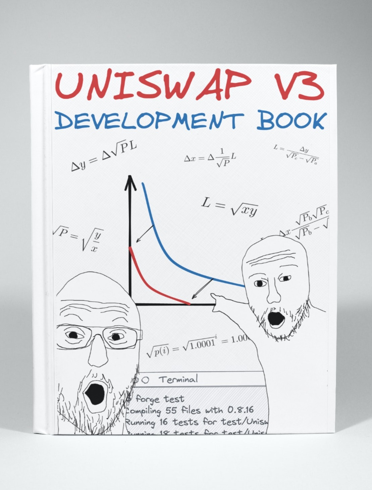

Uniswap V3 开发手册（中文版）
本书翻译自Uniswap V3 Development Book，非常感谢作者 Jeiwan 的辛勤工作。现将其翻译成中文，方便大家学习。希望在defi领域有更多的朋友加入，一起学习，一起进步。
由于本人水平有限，翻译校对难免有错误，欢迎大家指正。

欢迎来到去中心化金融和自动化做市商的世界，本书将成为您在这个神秘而有趣的世界中的向导，我们将一起构建当今去中心化金融中最有趣和最重要的应用之 一 Uniswap V3 !
本书将指导您完成去中心化应用的开发,包括:
本书不适合完全的初学者。
我希望您是一位有经验的开发者,曾用任何编程语言进行过编程。如果您了解Solidity的语法(本书的主要编程语言)那就更好了。如果不了解也没关系:在我们的旅程中,我们会学到很多关于Solidity和以太坊虚拟机的知识。
本书适合区块链初学者。
如果您只是听说过区块链并对其感兴趣，但还没有机会深入了解，那么这本书就是为您准备的！是的，就是为您！您将学习区块链(特别是以太坊)如何工作，如何编写和部署智能合约，以及如何在您的计算机上运行和测试它们。
好了,让我们开始吧!
有用的链接
- 本书英文版可在以下网址获取： https://uniswapv3book.com/
- 本书英文版托管在GitHub上： https://github.com/Jeiwan/uniswapv3-book
- 所有源代码托管在单独的仓库中： https://github.com/Jeiwan/uniswapv3-code
- 如果您认为可以帮助Uniswap，他们有一个资助计划。
- 如果您对DeFi和区块链感兴趣，在Twitter上关注作者。
有任何问题？
每个里程碑在GitHub讨论区都有自己的部分。如果书中有任何不清楚的地方,请随时提问！
完全初学者从哪里开始？
对于了解恒定函数做市商和Uniswap的人来说，这本书会很容易理解。但如果您是去中心化交易所的完全初学者，以下是我建议的开始方式：
- 阅读作者的Uniswap V1系列。它涵盖了Uniswap的基础知识，代码也更简单。如果您有一些Solidity经验，可以跳过代码部分，因为它非常基础。
- 阅读作者的Uniswap V2系列。作者在这里没有深入探讨数学和底层概念,因为它们在V1系列中已经涉及，但V2的代码值得熟悉——它有望教会您一种关于智能合约编程的不同的思维方式(这与我们通常编写程序的方式不同)。
如果数学对于您来讲是一个问题，可以考虑学习Khan Academy的代数1和代数2课程。Uniswap的数学并不难，但它需要基本的代数运算技能。
Uniswap资助计划

为了写这本书，作者获得了Uniswap Foundation的资助。没有这笔资助,作者可能就没有足够的动力和耐心深入研究Uniswap的最深层次并完成这本书。这笔资助也是本书开源和对任何人免费的主要原因。您可以了解更多关于Uniswap资助计划的信息(也许可以申请！)。